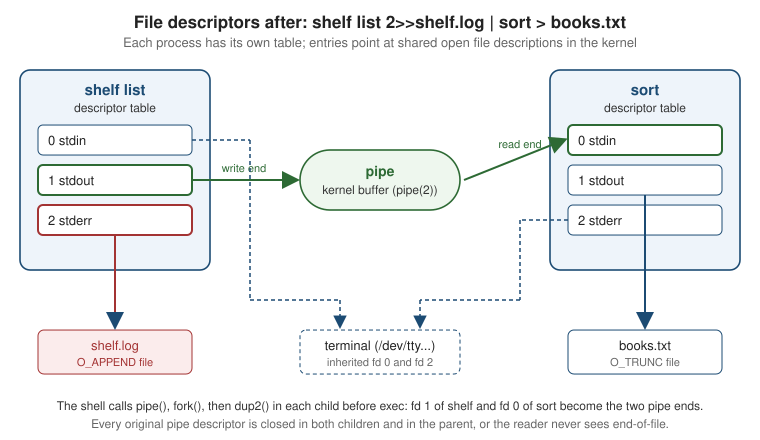

POSIX Processes, Signals & I/O
|
This content was generated with the assistance of AI and should be verified against the official documentation before being relied on in production. |
Every command-line program on Linux, macOS and the BSDs runs inside the same small model: a process with an argument
vector and an environment, a table of file descriptors (0 for input, 1 for output, 2 for diagnostics), a set of
signal dispositions, and an exit status that its parent collects with waitpid. A shell pipeline, a build tool that
launches a compiler, a daemon that restarts on SIGHUP and a test harness that runs a CLI and captures its output are
all built from the same dozen system calls. This page walks through them with the running Bookshelf scenario: a
shelf command-line tool, a shelf-report program that launches it and captures its output, and a shelfd
background daemon.
The page was written against POSIX.1-2024 (IEEE Std 1003.1-2024, Open Group Base Specifications Issue 8),
glibc 2.44 for the Linux behaviour and the macOS libc for the Apple behaviour. The C snippets were compiled with
Apple clang 21 on macOS and run there, with a stand-in shelf shell script on the PATH; the parts that are
Linux-specific (signalfd, /proc) were not run while the page was written and are marked where they appear.
Windows has no fork and a different signal model; this page says where it differs and sends you to
Windows Console & Processes for the Win32 side. Terminals, process
groups and job control are on Terminals, TTYs & Pseudo-Terminals, and
the table of remaining platform differences on Cross-Platform Portability.
The meaning of exit codes, and the stdout / stderr split as a design rule, are on
Streams & Exit Codes; here they appear only as the mechanism that
implements them.
What POSIX standardises, and where each platform departs
POSIX is a specification of interfaces, not an implementation. Linux (with glibc or musl) and macOS (certified as UNIX) implement almost all of what this page uses, and the BSDs are close; the differences that matter for a command-line program are in the table.
| Topic | Linux (glibc) | macOS | Windows |
|---|---|---|---|
Process creation |
|
|
No |
Descriptors |
|
|
CRT descriptors ( |
Signals |
Full POSIX set, real-time signals, |
Full POSIX set; no |
|
Writing to a closed pipe |
|
|
An error return from the write; no |
Process information |
|
|
Task Manager, Win32 toolhelp APIs |
The remaining sections use the POSIX names, because they are the common denominator of Linux and macOS.
The program’s inputs: main, argv, envp and environ
A C program starts at main. POSIX defines two forms of the arguments it receives from the system, and a third that
is a widespread extension.
| Signature | Meaning |
|---|---|
|
The program ignores its arguments. |
|
|
|
Adds the environment as a null-terminated array of |
POSIX declares the environment as the global variable environ (extern char **environ;, which the application
declares itself because no standard header does it) and gives the functions getenv, setenv, unsetenv and
putenv. The program below prints the facts, counts the SHELF_ variables and adds one that its children will inherit.
#include <stdio.h>
#include <stdlib.h>
#include <string.h>
extern char **environ;
int main(int argc, char *argv[], char *envp[])
{
printf("argc = %d, argv[0] = %s\n", argc, argv[0]);
/* envp and environ are the same array on POSIX systems. */
printf("envp == environ: %s\n", envp == environ ? "yes" : "no");
const char *home = getenv("SHELF_HOME");
printf("SHELF_HOME = %s\n", home != NULL ? home : "(unset)");
/* Walk the whole environment, counting entries that start with SHELF_. */
int shelf_vars = 0;
for (char **e = environ; *e != NULL; e++) {
if (strncmp(*e, "SHELF_", 6) == 0) {
shelf_vars++;
}
}
printf("%d SHELF_ variable(s)\n", shelf_vars);
/* Modify the environment of this process (and of its future children). */
if (setenv("SHELF_COLOR", "never", 1) != 0) {
perror("setenv");
return EXIT_FAILURE;
}
return EXIT_SUCCESS;
}$ cc -Wall -Wextra -o env env.c
$ SHELF_HOME=/srv/shelf ./env list --all
argc = 3, argv[0] = ./env
envp == environ: yes
SHELF_HOME = /srv/shelf
1 SHELF_ variable(s)Source: POSIX — environ and
POSIX — setenv. The same program structure,
exit status conventions and main signatures in the context of the whole language are on
C program structure.
Environment pitfalls that matter for a command-line tool:
-
The environment is mutable global state.
setenvandputenvare not required to be thread-safe, so change the environment during start-up, before any thread exists, or build an explicitenvpfor a child instead. -
The environment is inherited by every child and is readable by others. On Linux,
/proc/PID/environshows it to the same user (and to root), andpsoptions can show it too. Pass secrets to a child over a pipe or a file descriptor, not through variables, when the child can avoid it. The same advice for design is on Security. -
Variable names are case sensitive on POSIX and case insensitive on Windows.
PathandPATHare one variable there. Portable code treats names as case sensitive and never relies on two names differing only by case. -
execwithout an environment inherits the caller’s. Theexec*eandfexecvevariants and theenvpargument ofposix_spawntake an explicit array, which is how a test harness gives a child an empty or controlled environment.
File descriptors, redirection and pipes
A file descriptor is a small non-negative integer that indexes the process’s table of open files. A descriptor refers to an open file description in the kernel (the offset, the status flags and the object itself), and several descriptors, in one process or in different processes, can refer to the same description. The shell hands every program three descriptors it did not open itself:
| fd | Name | Convention |
|---|---|---|
0 |
|
Input. A terminal by default; a file with |
1 |
|
The program’s result, the data a caller or the next program in a pipeline consumes. |
2 |
|
Diagnostics, progress and prompts. Kept separate so that redirecting the result does not hide errors. |
The system calls follow two rules that explain every redirection a shell performs.
-
The lowest unused descriptor is returned.
open,pipeanddupalways return the smallest free number, so closing descriptor 1 and opening a file would make that file the new standard output.dup2(old, new)does the same thing explicitly and atomically: it closesnewif it is open, then makesnewrefer to the same description asold. -
Descriptors survive
forkandexec. A child starts with copies of its parent’s descriptors, and anexeckeeps them open unless they carry the close-on-exec flag. A redirection is therefore "fork, change the descriptor table in the child, then exec the program", and the program never knows.
| Shell form | System calls in the child, before exec |
|---|---|
|
|
|
the same with |
|
|
|
open the log, |
|
|
|
|
The order of 2>&1 matters because it is evaluated left to right: shelf list > out.txt 2>&1 sends both streams to the
file, while shelf list 2>&1 > out.txt points the error stream at the terminal and only then redirects the output. The
figure shows the descriptor tables of a pipeline once the shell has finished its dup2 calls.

The next program does by hand what a shell does for shelf list 2>> shelf.log while reading the output: it creates a
pipe, forks, rewires descriptors 1 and 2 in the child, replaces the child with shelf, and reads the child’s output in
the parent.
#include <errno.h>
#include <fcntl.h>
#include <stdio.h>
#include <stdlib.h>
#include <string.h>
#include <sys/wait.h>
#include <unistd.h>
/* Run "shelf list", capture its stdout through a pipe, send its stderr to a log file. */
int main(void)
{
int pipefd[2];
if (pipe(pipefd) == -1) {
perror("pipe");
return EXIT_FAILURE;
}
pid_t pid = fork();
if (pid == -1) {
perror("fork");
return EXIT_FAILURE;
}
if (pid == 0) {
/* Child: only async-signal-safe calls between fork and exec in a threaded program. */
close(pipefd[0]); /* the child never reads the pipe */
if (dup2(pipefd[1], STDOUT_FILENO) == -1) { /* fd 1 now refers to the write end */
_exit(126);
}
close(pipefd[1]); /* the original descriptor is no longer needed */
int log = open("shelf.log", O_WRONLY | O_CREAT | O_APPEND | O_CLOEXEC, 0600);
if (log == -1 || dup2(log, STDERR_FILENO) == -1) { /* 2>>shelf.log */
_exit(126);
}
if (log != STDERR_FILENO) {
close(log);
}
execlp("shelf", "shelf", "list", (char *)NULL);
/* exec only returns on failure; mimic the shell's 126 / 127 convention. */
_exit(errno == ENOENT ? 127 : 126);
}
/* Parent: close the write end, otherwise read() never sees end-of-file. */
close(pipefd[1]);
char buf[256];
ssize_t n;
while ((n = read(pipefd[0], buf, sizeof buf)) > 0 || (n == -1 && errno == EINTR)) {
if (n > 0) {
fwrite(buf, 1, (size_t)n, stdout);
}
}
close(pipefd[0]);
int status;
while (waitpid(pid, &status, 0) == -1) {
if (errno != EINTR) {
perror("waitpid");
return EXIT_FAILURE;
}
}
if (WIFEXITED(status)) {
printf("exited with status %d\n", WEXITSTATUS(status));
return WEXITSTATUS(status);
}
if (WIFSIGNALED(status)) {
printf("killed by signal %d (%s)%s\n", WTERMSIG(status), strsignal(WTERMSIG(status)),
WCOREDUMP(status) ? ", core dumped" : "");
return 128 + WTERMSIG(status);
}
return EXIT_FAILURE;
}$ cc -Wall -Wextra -o shelf-report shelf-report.c
$ ./shelf-report
Dune
Emma
Beloved
exited with status 0
$ cat shelf.log
shelf: 3 books
$ PATH=/nonexistent ./shelf-report ; echo $?
exited with status 127
127Source: POSIX — pipe,
POSIX — dup2,
POSIX — fork and
POSIX — exec. The compiled run above used a small
shell script named shelf on the PATH that prints three titles to stdout and a line to stderr.
Two descriptor details cause most of the real-world bugs:
-
Unclosed pipe ends hang readers. A reader sees end-of-file only when every write end of the pipe is closed. If the parent keeps its copy of the write end (or a second child inherits it), the loop above never terminates. Close what you do not use, in every process, immediately after
fork. -
Leaked descriptors cross
exec. A descriptor opened withoutO_CLOEXECis inherited by every program the process later starts, which can keep a pipe open, expose a secret file, or keep a socket from being closed. Create descriptors withO_CLOEXEC(open,socketwithSOCK_CLOEXEC) or withpipe2(fds, O_CLOEXEC)(new in POSIX Issue 8, which also addedO_CLOFORKfor descriptors that must not survive afork). The olderpipeplusfcntl(fd, F_SETFD, FD_CLOEXEC)has a window, in a multithreaded program, between the two calls.
Descriptors are also the basis of the isatty test that decides colour and prompts; that rule is on
TTY, Colour & Interactivity, and the C library’s buffered layer
over descriptors is on C input, output and files.
Creating processes: fork, exec, posix_spawn and waitpid
A POSIX process is created in two steps that can be used apart or together:
-
forkcreates a copy of the calling process: same memory contents, same descriptors, same signal dispositions, a new process ID. It returns the child’s PID in the parent and 0 in the child. -
The
execfamily replaces the running program inside the same process ID with a new program image. The descriptors (withoutFD_CLOEXEC), the environment, the working directory, theumaskand the ignored signal dispositions carry over; handlers that were installed are reset to the default, because the code they pointed at no longer exists.
The members of the exec family differ only in how they take their arguments and where they find the program:
| Function | Arguments and lookup |
|---|---|
|
List form: each argument is a separate parameter, ending with a null pointer. |
|
Vector form: an |
|
Executes the program open on a file descriptor, so a program can be checked or verified before it runs. |
execvp and execlp search PATH only if the name has no slash. If the file is found but is not a valid executable
the call fails with ENOEXEC or EACCES, and a script without a #! line is passed to the shell as a fallback by
some implementations. The shell convention for what the caller then reports is exit status 126 when the command was
found but could not be executed, and 127 when it was not found (see the Shell Command Language, exit status for commands). The
child above applies it because only the child knows why exec failed.
fork is cheap on a modern kernel but has sharp edges, and POSIX states the main one plainly: if a multi-threaded
process calls fork, the child contains only the calling thread, and the application must ensure the child executes
only async-signal-safe operations until an exec succeeds. In practice that means no malloc, no printf, no
locking between fork and exec. Other pitfalls:
-
Buffered output is duplicated. Anything still in the
stdiobuffer whenforkis called is in both processes and may be printed twice. Callfflush(NULL)beforefork, and leave the child with_exitrather thanexitwhenexecfails, so the copied buffers andatexithandlers do not run. -
Zombies. A child that has exited stays in the process table until its parent calls
waitpid(or ignoresSIGCHLDwithSA_NOCLDWAIT). A long-running daemon that starts children must reap them. -
vforkis not in POSIX (it was removed in an earlier revision). Useposix_spawnwhere you only need to run another program.
posix_spawn
posix_spawn and posix_spawnp combine fork and exec into one call, with the descriptor changes described as data
(file actions) and the signal and process-group changes described as attributes. The implementation can avoid
copying the address space, which is why it is the preferred call for programs that launch many children or are
large. It also removes the question of which functions are safe between fork and exec, since you never run code in
the child. The next program does what the shell does for shelf list > books.txt 2>> shelf.log.
#include <fcntl.h>
#include <spawn.h>
#include <stdio.h>
#include <stdlib.h>
#include <string.h>
#include <sys/wait.h>
#include <unistd.h>
extern char **environ;
int main(void)
{
posix_spawn_file_actions_t fa;
posix_spawn_file_actions_init(&fa);
/* Equivalent of: shelf list > books.txt 2>> shelf.log */
posix_spawn_file_actions_addopen(&fa, STDOUT_FILENO, "books.txt", O_WRONLY | O_CREAT | O_TRUNC, 0644);
posix_spawn_file_actions_addopen(&fa, STDERR_FILENO, "shelf.log", O_WRONLY | O_CREAT | O_APPEND, 0600);
char *argv[] = { "shelf", "list", NULL };
pid_t pid;
/* The p variant searches PATH, like execvp. The return value is an errno value; errno is not set. */
int rc = posix_spawnp(&pid, "shelf", &fa, NULL, argv, environ);
posix_spawn_file_actions_destroy(&fa);
if (rc != 0) {
fprintf(stderr, "posix_spawnp: %s\n", strerror(rc));
return 127;
}
int status;
if (waitpid(pid, &status, 0) == -1) {
perror("waitpid");
return EXIT_FAILURE;
}
printf("child %s with %d\n", WIFEXITED(status) ? "exited" : "ended",
WIFEXITED(status) ? WEXITSTATUS(status) : WTERMSIG(status));
return 0;
}$ ./spawn
child exited with 0
$ cat books.txt
Dune
Emma
BelovedSource: POSIX — posix_spawn and
POSIX — posix_spawn_file_actions_addopen.
The snippet was compiled and run on macOS with the stand-in shelf script.
| Facility | What it sets up in the child |
|---|---|
|
Open a file onto a descriptor, duplicate one descriptor onto another, close one. Applied in the order they were added. |
|
Change the child’s working directory. New in POSIX Issue 8, so older C libraries may lack them. |
|
Give the child a chosen signal mask and reset chosen signals to their defaults. |
|
Put the child in its own process group (job control) or a new session. |
An important difference from fork and exec: posix_spawn returns an errno value instead of setting errno. If the
failure happens after the call has already returned (the program could not be loaded), POSIX allows the child to exit
with status 127 instead, so a caller must treat a 127 exit as "the command was not found or could not run" and not only
as a return value of the call itself.
Exit status and waitpid
waitpid(pid, &status, options) blocks until the child changes state and fills status, an opaque integer that is read with the
macros from <sys/wait.h>; never compare status with a number directly.
| Macro | Meaning |
|---|---|
|
The child ended with |
|
The low 8 bits of the exit code, 0 to 255. Valid only if |
|
The child was ended by a signal. |
|
The signal number. Valid only if |
|
With |
|
With |
A program that is killed has no exit code of its own. A POSIX shell reports 128+N in $? for a command ended by
signal number N, so 130 means SIGINT and 143 means SIGTERM; the table of the common values is on
Streams & Exit Codes. A program that wants to report "I was interrupted"
to its own parent follows the same convention, and a program that runs another one passes its status through the same way.
waitpid returns -1 with errno set to EINTR when a signal handler interrupts it, so a robust caller loops, as the
programs above do, and ECHILD when there is nothing to wait for.
Source: POSIX — waitpid and POSIX — Shell Command Language (exit status for commands).
Signals
A signal is a small asynchronous notification delivered to a process (or to one of its threads). Each signal has a
disposition: the default action (terminate, terminate with a core dump, stop, continue or ignore), "ignore", or a
handler function. Two signals cannot be caught or ignored at all: SIGKILL and SIGSTOP.
| Signal | Default action | What a command-line program should do |
|---|---|---|
|
Terminate |
The user pressed Ctrl-C. Clean up, then exit with 130. Delivered to the whole foreground process group. |
|
Terminate |
The polite request to stop ( |
|
Terminate |
The controlling terminal closed. For a daemon, the convention is to reload configuration; for an interactive tool, to stop. |
|
Terminate and dump core |
Ctrl-\ . Leave the default unless you have a reason. |
|
Terminate |
The reader of a pipe or socket has gone away (see the next section). |
|
Ignore |
A child stopped or exited. Handle it, or call |
|
Stop, continue |
Ctrl-Z and |
|
Ignore |
The terminal was resized (present on Linux and macOS). |
|
Terminate |
Free for the program’s own use, for example to dump state. |
sigaction, and why not signal
Install handlers with sigaction, not with the older signal. The behaviour of signal after a handler has run
(whether the disposition is reset, whether system calls restart) differs between System V and BSD heritage and is
unspecified for portable code; sigaction states everything explicitly. The structure’s fields are:
| Field | Use |
|---|---|
|
The function, |
|
Signals blocked while the handler runs, in addition to the one being handled. Start from |
|
|
Without SA_RESTART, a handler that runs while read, write, waitpid or poll is blocked makes the call return -1
with errno == EINTR. Each design is valid: a program that must notice the signal promptly leaves the flag off and
checks a flag after every EINTR; a program that wants slow calls to just continue sets it. Even with SA_RESTART, a few
calls (on Linux, poll, select and sleep among them) are never restarted, so any loop around them must handle EINTR.
What a handler may do
A handler runs between any two instructions of the interrupted code, possibly in the middle of malloc. POSIX therefore
allows a handler to call only async-signal-safe functions (a list in the standard and in signal-safety(7)): write,
read, _exit, _Exit, sigaction, kill, dup2, open and close and a few dozen more; printf, malloc,
free, exit and every other stdio call are not on it. The only objects it may safely modify are volatile sig_atomic_t
variables (and lock-free atomics). It must also save and restore errno, because a system call it makes may overwrite
the value the interrupted code is about to read.
The recipe that follows from the rules is do almost nothing in the handler. Set a flag, or write a byte, and let the
normal flow of the program do the work. The self-pipe trick makes that work with poll: the handler writes one byte
into a non-blocking pipe whose read end is one of the descriptors in the main loop’s poll set, so the loop wakes up
immediately and there is no race between checking the flag and starting to wait. The next program is the skeleton of
shelfd, using that recipe for SIGINT, SIGTERM and SIGHUP.
#include <errno.h>
#include <fcntl.h>
#include <poll.h>
#include <signal.h>
#include <stdio.h>
#include <stdlib.h>
#include <string.h>
#include <unistd.h>
static int wake_fd[2]; /* self-pipe: [0] read end, [1] write end */
static volatile sig_atomic_t last_signal = 0; /* the only object a handler may store to */
static void on_signal(int signo)
{
int saved_errno = errno; /* write() may clobber errno */
last_signal = signo;
unsigned char byte = (unsigned char)signo;
(void)!write(wake_fd[1], &byte, 1); /* async-signal-safe; ignore EAGAIN on a full pipe */
errno = saved_errno;
}
static int set_nonblock_cloexec(int fd)
{
int fl = fcntl(fd, F_GETFL);
if (fl == -1 || fcntl(fd, F_SETFL, fl | O_NONBLOCK) == -1) return -1;
int fdfl = fcntl(fd, F_GETFD);
return fdfl == -1 ? -1 : fcntl(fd, F_SETFD, fdfl | FD_CLOEXEC);
}
int main(void)
{
if (pipe(wake_fd) == -1 || set_nonblock_cloexec(wake_fd[0]) == -1 || set_nonblock_cloexec(wake_fd[1]) == -1) {
perror("pipe");
return EXIT_FAILURE;
}
struct sigaction sa;
memset(&sa, 0, sizeof sa);
sa.sa_handler = on_signal;
sigemptyset(&sa.sa_mask);
sa.sa_flags = SA_RESTART; /* restart slow system calls interrupted by the handler */
int caught[] = { SIGINT, SIGTERM, SIGHUP };
for (size_t i = 0; i < sizeof caught / sizeof caught[0]; i++) {
if (sigaction(caught[i], &sa, NULL) == -1) {
perror("sigaction");
return EXIT_FAILURE;
}
}
struct sigaction ign;
memset(&ign, 0, sizeof ign);
ign.sa_handler = SIG_IGN; /* writes to a closed socket now fail with EPIPE */
sigemptyset(&ign.sa_mask);
sigaction(SIGPIPE, &ign, NULL);
fprintf(stderr, "shelfd: ready (pid %ld)\n", (long)getpid());
for (;;) {
struct pollfd fds[1] = { { .fd = wake_fd[0], .events = POLLIN } };
/* A real daemon would also poll its listening socket here. */
if (poll(fds, 1, -1) == -1) {
if (errno == EINTR) continue;
perror("poll");
return EXIT_FAILURE;
}
unsigned char byte;
while (read(wake_fd[0], &byte, 1) == 1) {
if (byte == SIGHUP) {
fprintf(stderr, "shelfd: reloading configuration\n");
} else {
fprintf(stderr, "shelfd: stopping on signal %d\n", byte);
/* Flush state and remove the socket here, then report 128+N. */
return 128 + byte;
}
}
}
}$ ./shelfd &
shelfd: ready (pid 83592)
$ kill -HUP %1
shelfd: reloading configuration
$ kill -TERM %1
shelfd: stopping on signal 15
$ wait %1 ; echo $?
143Source: POSIX — sigaction,
POSIX — System Interfaces, General Information
(signal concepts and the list of async-signal-safe functions) and
signal-safety(7). The program was compiled and run on
macOS. The fprintf calls in the main loop run in ordinary code, not in the handler, which is exactly why this
design is allowed to use them.
Alternatives to the self-pipe trick, each tied to a platform:
-
signalfd(Linux only). Block the signals withpthread_sigmask(orsigprocmaskin a single-threaded program), create a descriptor withsignalfd, andreadstruct signalfd_siginforecords from it like any other descriptor. There is no handler at all. It does not exist on macOS or the BSDs, which provideEVFILT_SIGNALinkqueueinstead. The description ofsignalfdcomes from its manual page,signalfd(2), and was not run while this page was written. -
sigwaitorsigtimedwaitin a dedicated thread, with the signals blocked in every other thread. Portable POSIX, and no handler, at the price of one thread. -
pselectandppollunblock a signal mask atomically while waiting, which closes the same race for a flag-based design.
Signal rules for programs that create children:
-
Ctrl-C reaches the whole foreground group. The terminal sends
SIGINTto every process in the foreground process group, so a child you started receives it at the same moment you do. A parent that waits for a child should not treat that as an error of its own, and the wrapper callsystem()ignoresSIGINTandSIGQUITin the caller while it waits. -
Ignored signals are inherited through
exec, caught ones are not. A parent that setsSIGPIPEtoSIG_IGNmakes every child it starts, and every grandchild, ignore it as well unless it resets them (withPOSIX_SPAWN_SETSIGDEFor in the child beforeexec). The same applies toSIGINTin a background job started by a non-interactive shell. -
The signal mask also survives
exec. A signal blocked beforeforkandexecis still blocked in the new program. -
Threads. A process-directed signal is delivered to any thread that does not block it; use
pthread_sigmaskto decide which one, and block everything in worker threads.
SIGPIPE and EPIPE
When a process writes to a pipe (or a socket) with no remaining reader, the kernel sends it SIGPIPE, and the default
action terminates it silently. That is the right behaviour for the classic pipeline shelf list | head -n 1: when head
has printed its line and exits, the writer does not need to keep producing output, and the shell reports status 141 for
it. If the program ignores or catches SIGPIPE, the failed write returns -1 with errno == EPIPE instead, and the
program decides what to do.
#include <errno.h>
#include <signal.h>
#include <stdio.h>
#include <stdlib.h>
#include <string.h>
/* Print the catalogue and stop quietly when the reader goes away: shelf-print | head -n 1 */
int main(int argc, char **argv)
{
if (argc > 1 && strcmp(argv[1], "--ignore-sigpipe") == 0) {
signal(SIGPIPE, SIG_IGN); /* write() now fails with EPIPE instead of killing us */
}
for (int i = 1; i <= 100000; i++) {
if (printf("book-%d\n", i) < 0) { /* stdio reports the failed write when its buffer drains */
break;
}
}
if (fflush(stdout) == EOF || ferror(stdout)) {
if (errno == EPIPE) {
return 128 + SIGPIPE; /* 141, what a shell reports after death by SIGPIPE */
}
perror("shelf: write error");
return EXIT_FAILURE;
}
return EXIT_SUCCESS;
}$ ./writer | head -n 1
book-1
$ ./writer --ignore-sigpipe | head -n 1
book-1
$ echo "${PIPESTATUS[@]}" # bash; zsh uses $pipestatus
141 0Source: POSIX — write (the EPIPE error and the SIGPIPE
signal) and pipe(7). Compiled and run on macOS.
Which choice is correct?
-
A filter or a command that prints to a pipeline: keep the default. Dying quietly from
SIGPIPEis the expected behaviour, andshelf list | headmust not print an error message. -
A daemon, a server, or any program that writes to several sockets: ignore
SIGPIPEand handleEPIPE, otherwise one disconnected client ends the whole process.shelfdabove does this. Other options for sockets are theMSG_NOSIGNALflag ofsend(Linux, and POSIX since Issue 7) orSO_NOSIGPIPE(macOS and the BSDs). -
Never print an error for
EPIPEon stdout in a program that is meant to sit in a pipeline; exit with status 141 or a plain 1. -
Do not leak the setting to children. An ignored
SIGPIPEis inherited throughexec, so a program that ignores it and then startsshelforheadchanges how they behave. Reset the disposition for the child, as noted above. -
Language runtimes choose for you. Some runtimes ignore
SIGPIPEbeforemainand turn it into an ordinary I/O error; check what yours does before relying on the default.
stdio buffering
stdio stores output in a buffer and writes it with one write call when a rule triggers. ISO C defines three modes,
and POSIX and C together fix the initial choice by what the stream is connected to:
| Mode | setvbuf constant |
Flushed when |
|---|---|---|
Unbuffered |
|
Immediately. The default for |
Line buffered |
|
At each newline, when the buffer is full, or when input is read from an unbuffered or line-buffered stream. The default for |
Fully buffered |
|
When the buffer (typically 4 to 64 KiB) is full or on |
That last row explains a famous surprise: a program prints progress while connected to a terminal and prints nothing for
a long time, then everything at once, when its output is piped. setvbuf(stream, buffer, mode, size) changes the mode,
and it must be called after the stream is open but before any other operation on it.
#include <stdio.h>
#include <unistd.h>
int main(void)
{
printf("stdout is a %s\n", isatty(STDOUT_FILENO) ? "terminal: line buffered" : "pipe or file: fully buffered");
printf("loading catalogue... "); /* no newline: stays in the buffer */
sleep(2);
printf("done\n");
fprintf(stderr, "warning on stderr (unbuffered)\n");
return 0;
}$ ./buf | cat
warning on stderr (unbuffered)
stdout is a pipe or file: fully buffered
loading catalogue... donePiped into cat, the stderr line comes out first and everything on stdout comes out together when the program exits, as above.
On a terminal the first line of stdout appears at once (line buffered), but the text loading catalogue... stays in the
buffer during the two-second sleep because it has no newline; an explicit fflush(stdout) shows it. Source:
POSIX — setvbuf; the buffering concepts are also explained in
the glibc manual. Compiled and run on macOS.
Practical rules:
-
Make the interleaving of stdout and stderr deliberate. They are separate streams with separate buffers, so their order in a combined capture (
2>&1) is not the order of the calls. Flush stdout before writing a diagnostic when order matters. -
Prompts need a flush. A prompt without a trailing newline stays in the buffer; call
fflush(stdout)before reading input, or write prompts tostderr. On a terminal,stdioflushes line-buffered output when input is read, but do not depend on it for a pipe. -
Streaming tools set line buffering explicitly (
setvbuf(stdout, NULL, _IOLBF, 0)) when downstream tools read their output as it is produced, for example withtail -f. -
Flush and check at exit.
fclose(stdout)orfflush(stdout)reports a deferred write error such asENOSPCorEPIPE; a program that ignores it returns 0 after losing data. -
Do not rewrite the buffering of a program you do not own.
stdbuffrom GNU coreutils adjusts the default throughLD_PRELOADand does not work for statically linked programs or those that callsetvbufthemselves; it is not in POSIX. -
Other languages have their own buffering layered on the same descriptors; their pages in this section state how they behave.
umask and locale
Two more pieces of process state are inherited by children and affect how a program behaves for the user.
umask
umask is the file-creation mask: the permission bits a program asks for in open or mkdir have those of the mask
removed. The usual default is 022, so a request for 0666 creates a 0644 file. A program that writes a token or a
configuration file with a credential should request the permissions it needs explicitly (for example 0600), and a
program that must not be influenced by the user’s mask can set one with umask(077). umask returns the previous value and
cannot be read without setting it, so read-then-restore it in one place; it is process-wide, shared by every thread.
setlocale and LC_ALL
C programs start in the C locale regardless of the user’s settings. setlocale(LC_ALL, "") is what makes the program
follow the environment, and a tool that never calls it ignores LANG entirely. The environment is evaluated per
category: LC_ALL overrides every other variable, then the specific category (LC_COLLATE, LC_CTYPE, LC_MESSAGES,
LC_MONETARY, LC_NUMERIC, LC_TIME), then LANG, then the default. The categories that matter for a command-line tool:
| Category | What it controls |
|---|---|
|
Character classes ( |
|
The order of |
|
The decimal point of |
|
Date and currency formats. |
|
The language of messages, together with |
#include <locale.h>
#include <stdio.h>
#include <stdlib.h>
#include <string.h>
#include <sys/stat.h>
int main(void)
{
/* Without this call the program stays in the "C" locale, whatever LANG says. */
if (setlocale(LC_ALL, "") == NULL) {
fprintf(stderr, "shelf: locale from the environment is not installed, using C\n");
}
/* Keep numeric output machine-readable regardless of the user's locale. */
setlocale(LC_NUMERIC, "C");
printf("LC_CTYPE = %s\n", setlocale(LC_CTYPE, NULL));
printf("LC_COLLATE = %s\n", setlocale(LC_COLLATE, NULL));
printf("%.2f\n", 1234.5);
printf("strcoll(\"a\", \"B\") = %d, strcmp = %d\n", strcoll("a", "B"), strcmp("a", "B"));
mode_t old = umask(077); /* new files default to rw------- */
printf("previous umask %03o\n", (unsigned)old);
return 0;
}$ ./loc
LC_CTYPE = C
LC_COLLATE = C
1234.50
strcoll("a", "B") = 31, strcmp = 1
previous umask 022
$ LANG=de_DE.UTF-8 ./loc
LC_CTYPE = de_DE.UTF-8
LC_COLLATE = de_DE.UTF-8
1234.50
strcoll("a", "B") = -14, strcmp = 1
previous umask 022The sign of strcoll("a", "B") flips between the C locale (byte order, where a sorts after B) and a German
UTF-8 locale (where a sorts before B); the exact magnitudes are implementation-defined, and so is the set of
locales installed on a machine. The output was produced on macOS. Source:
POSIX — setlocale,
POSIX — Locale,
POSIX — Environment Variables and
POSIX — umask.
Locale pitfalls:
-
Machine-readable output must not depend on the locale. A decimal comma or a localised date breaks the next program in the pipeline. Force
LC_NUMERICtoCas above, or format numbers with your own code, and give a JSON or TSV output mode a fixed format. -
Scripts that need a predictable order use
LC_ALL=C.sort,grepandlsfollow the locale, so the same command prints a different order on two machines. SetLC_ALL=Cin a test or a script, never inside a library. -
A locale name that is not installed makes
setlocalereturn null, and the program silently stays in the C locale. On Linux, checklocale -a. -
Containers often have only the C locale. Programs that print UTF-8 should not assume the locale is a UTF-8 one; the bytes are fine, but classification and width functions treat them as single-byte characters.
-
Terminal width and encoding are separate topics covered on Escape Sequences & Terminal Capabilities.
The POSIX Utility Syntax Guidelines as an implementation checklist
Chapter 12 of the POSIX Base Definitions lists fourteen guidelines for how a utility names itself and parses its
arguments. The design rationale (why these rules help people and agents) and the GNU long-option conventions are on
CLI Design Fundamentals and are not repeated here. This table is
the implementation view: for each guideline, what your code has to do. getopt from <unistd.h> is the function the
standard provides for parsing options that follow them.
| # | Guideline (summary) | How to implement it |
|---|---|---|
1 |
Utility names are two to nine characters. |
Name the executable |
2 |
Lowercase letters and digits only. |
No capitals, hyphens or underscores in the utility name ( |
3 |
An option name is one alphanumeric character; |
Define options with |
4 |
Options start with |
|
5 |
Options without arguments can be grouped behind one |
|
6 |
An option and its option-argument are separate arguments. |
|
7 |
Option-arguments are not optional. |
Do not declare an option that may or may not take a value; use two options, or a long option form. |
8 |
Several values for one option are one argument, separated by commas or blanks. |
|
9 |
Options come before operands. |
|
10 |
A |
|
11 |
The order of different options does not matter, and a repeated option with an argument is read in order. |
Parse into a configuration structure first and then act. Do not run side effects while parsing. |
12 |
The order of operands may matter. |
Document it per command ( |
13 |
|
Treat the single operand |
14 |
If something can be read as an option group by guidelines 3 to 10, it is treated as one. |
Do not special-case a value that begins with |
The program below applies the checklist to shelf [-qv] [-o file] [--] [isbn...]. Its option string starts with a plus sign:
POSIX allows a leading plus sign and says it has no effect in a conforming environment, while glibc uses it to
disable argument permutation, so the same behaviour results on both.
#include <stdio.h>
#include <stdlib.h>
#include <unistd.h>
/* shelf [-qv] [-o file] [--] [isbn...] (Guidelines 3 to 10 and 13 of the POSIX Utility Syntax Guidelines) */
int main(int argc, char *argv[])
{
int quiet = 0, verbose = 0;
const char *output = "-"; /* "-" means standard output (Guideline 13) */
int opt;
opterr = 0; /* print our own diagnostics */
while ((opt = getopt(argc, argv, "+qvo:")) != -1) { /* leading + : stop at the first operand everywhere */
switch (opt) {
case 'q': quiet = 1; break;
case 'v': verbose = 1; break;
case 'o': output = optarg; break;
default:
fprintf(stderr, "shelf: invalid option or missing argument: -%c\n", optopt);
fprintf(stderr, "usage: shelf [-qv] [-o file] [--] [isbn...]\n");
return 2; /* usage errors conventionally exit with 2 */
}
}
printf("quiet=%d verbose=%d output=%s operands=%d\n", quiet, verbose, output, argc - optind);
for (int i = optind; i < argc; i++) {
printf("operand: %s\n", argv[i]);
}
return EXIT_SUCCESS;
}$ ./opts -qvo out.txt -- -9781234 978
quiet=1 verbose=1 output=out.txt operands=2
operand: -9781234
operand: 978
$ ./opts a -q
quiet=0 verbose=0 output=- operands=2
operand: a
operand: -q
$ ./opts -o ; echo $?
shelf: invalid option or missing argument: -o
usage: shelf [-qv] [-o file] [--] [isbn...]
2Source: POSIX — Utility Conventions and
POSIX — getopt. Compiled and run on macOS;
the glibc behaviour is described in the glibc manual.
getopt handles short options only. Long options such as --color=never are a GNU extension (getopt_long), covered
with argp on Command-Line Programs in C.
Pitfalls and security notes
-
Do not build a shell command from user data.
systemcalled with a command string that includes the title hands the whole string tosh -c, so a title such asx; rm -r ~is executed. Useexecvporposix_spawnpwith an argument vector, which never involves a shell, and put--before operands that came from outside. -
Check every system call.
closecan report a deferred write error,dup2can fail withEMFILE,waitpidcan be interrupted. A command-line tool that ignores them loses data without noticing. -
Close descriptors you do not pass on (all of them, if you are a daemon): use
O_CLOEXEC, or close from 3 upward in the child. A leaked descriptor is also a security problem when the child runs a less trusted program. -
Reap your children. Otherwise they stay as zombies until the parent exits.
-
Keep handlers tiny. Anything beyond setting a
volatile sig_atomic_tflag or writing a byte belongs in the main loop. -
Restore terminal state on every exit path, including
SIGTERMandSIGTSTP, for interactive programs; the rules are on Terminals, TTYs & Pseudo-Terminals. -
TOCTOU on files. Checking with
accessand then opening races with other processes. Open with the flags you need and handle the error. -
Exit codes are 8 bits.
exit(256)is 0. Keep codes in 0 to 125 for your own meanings, since 126 and 127 mean "not executable" and "not found" to shells, and values above 128 mean "killed by a signal".
Windows, and what does not carry over
A program that uses only the C standard library (stdio, stdlib, string) compiles on Windows with MSVC or clang-cl, but the
process and signal model on this page does not exist there in the same form.
| POSIX | Windows (Win32 and the UCRT) | Notes |
|---|---|---|
|
|
There is no way to copy a running process. Windows programs describe the child’s handles, directory and environment in one call. |
|
|
A handle is inherited only if it is marked inheritable and the inheritance flag is set on the call. |
|
|
The exit code is a 32-bit value. There is no "killed by a signal" status. |
|
|
A control handler runs on a new thread, not on the interrupted one. |
|
Write fails with an error (broken pipe) |
Check the result of each write. |
|
CRT |
|
|
Not in the CRT |
Use a library, the language’s own parser, or gnulib. Windows tools also use |
The Win32 side is covered on Windows Console & Processes, which
includes the table of Win32 and POSIX equivalents. For the Windows Subsystem for Linux, Cygwin and MSYS2: WSL runs real Linux
and the whole page applies as written; Cygwin and MSYS2 emulate fork and signals in a compatibility library and are
slower at process creation.
Other pages show the same model through the lens of a language runtime: Rust I/O, files, processes and environment
for std::process::Command, and Node.js process signals and exit codes for process.on('SIGINT').